Fichas de Cultura general
329 fichas de Cultura general en español para imprimir (PDF), sin preparación y con solucionario: comprensión lectora, búsquedas del tesoro y más, filtrables por grado.
329 recursos
Por grado: 1.º de primaria · 1.er grado (1.º de primaria) · 1.º de ESO · 7.º grado (1.º de ESO) · 6.º de primaria
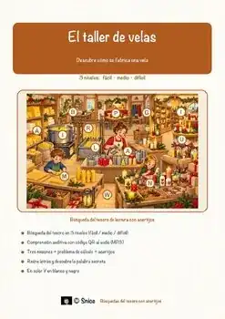
«El taller de velas» – Búsqueda del tesoro de lectura
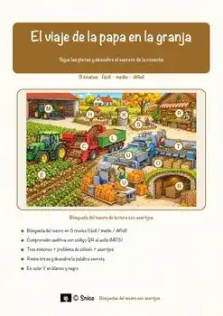
«El viaje de la papa en la granja» – Búsqueda del tesoro de lectura
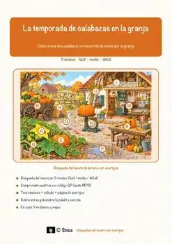
«La temporada de calabazas en la granja» – Búsqueda del tesoro de lectura
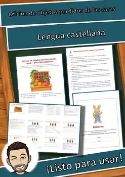
Describir personas: la oficina de objetos perdidos, 5.º–6.º Primaria – Ficha de lectura: texto con huecos, comprensión auditiva y sopa de letras
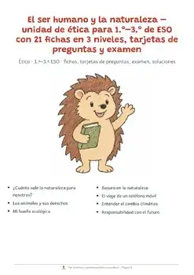
El ser humano y la naturaleza – Ficha de lectura: texto con huecos, comprensión auditiva y sopa de letras
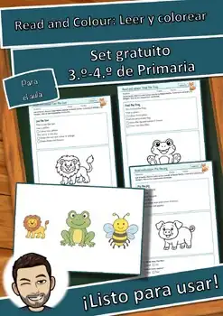
Taller de inglés: Read and Colour: Leer y colorear – Ficha de lectura: texto con huecos, comprensión auditiva y sopa de letras
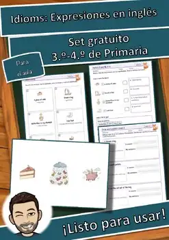
Taller de inglés: Idioms: Expresiones en inglés – Ficha de lectura: texto con huecos, comprensión auditiva y sopa de letras
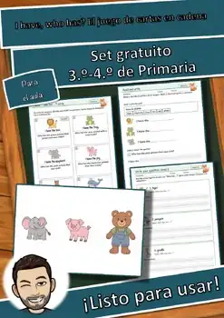
Taller de inglés: I have, who has? gratis (GRATIS) – Ficha de lectura: texto con huecos, comprensión auditiva y sopa de letras
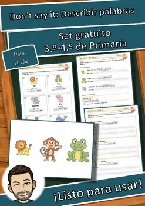
Taller de inglés: Don't say it: Describir palabras – Ficha de lectura: texto con huecos, comprensión auditiva y sopa de letras
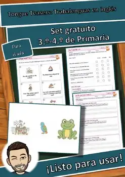
Taller de inglés: Tongue Teasers: Trabalenguas en inglés – Ficha de lectura: texto con huecos, comprensión auditiva y sopa de letras
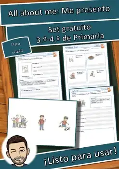
Taller de inglés: All about me: Me presento – Ficha de lectura: texto con huecos, comprensión auditiva y sopa de letras
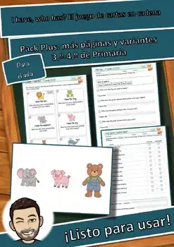
Taller de inglés: I have, who has? El juego de cartas en cadena – Ficha de lectura: texto con huecos, comprensión auditiva y sopa de letras
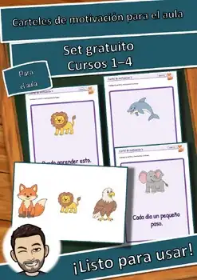
Taller de clase: Carteles de motivación para el aula – Ficha de lectura: texto con huecos, comprensión auditiva y sopa de letras
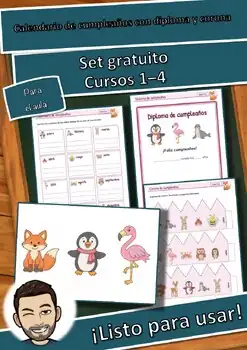
Taller de clase: Calendario de cumpleaños gratis (GRATIS) – Ficha de lectura: texto con huecos, comprensión auditiva y sopa de letras
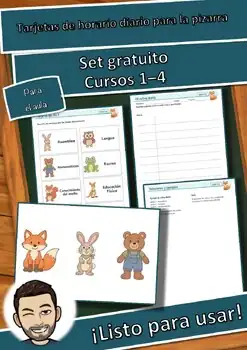
Taller de clase: Tarjetas de horario gratis (GRATIS) – Ficha de lectura: texto con huecos, comprensión auditiva y sopa de letras
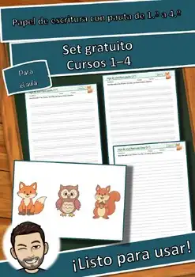
Taller de clase: Papel de escritura gratis (GRATIS) – Ficha de lectura: texto con huecos, comprensión auditiva y sopa de letras
Taller de clase: Tarjetas de elogio gratis (GRATIS) – Ficha de lectura: texto con huecos, comprensión auditiva y sopa de letras
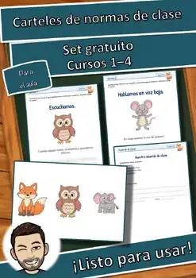
Taller de clase: Carteles de normas de clase – Ficha de lectura: texto con huecos, comprensión auditiva y sopa de letras
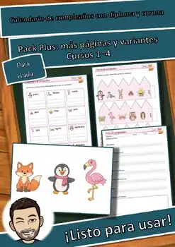
Taller de clase: Calendario de cumpleaños con diploma y corona – Ficha de lectura: texto con huecos, comprensión auditiva y sopa de letras
Taller de clase: Tarjetas de horario diario para la pizarra – Ficha de lectura: texto con huecos, comprensión auditiva y sopa de letras
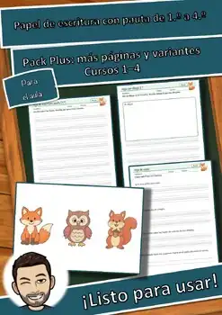
Taller de clase: Papel de escritura con pauta de 1.º a 4.º – Ficha de lectura: texto con huecos, comprensión auditiva y sopa de letras
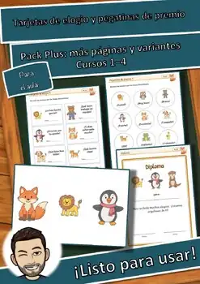
Taller de clase: Tarjetas de elogio y pegatinas de premio – Ficha de lectura: texto con huecos, comprensión auditiva y sopa de letras
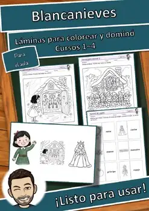
Taller de cuentos: Blancanieves – Ficha de lectura: texto con huecos, comprensión auditiva y sopa de letras
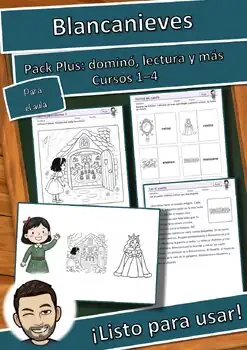
Taller de cuentos: Blancanieves Pack Plus – Ficha de lectura: texto con huecos, comprensión auditiva y sopa de letras
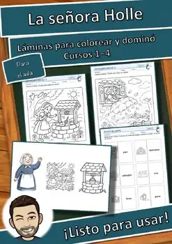
Taller de cuentos: Señora Holle – Ficha de lectura: texto con huecos, comprensión auditiva y sopa de letras
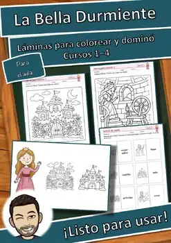
Taller de cuentos: La Bella Durmiente – Ficha de lectura: texto con huecos, comprensión auditiva y sopa de letras
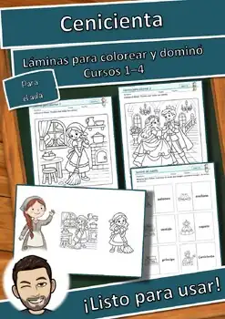
Taller de cuentos: Cenicienta – Ficha de lectura: texto con huecos, comprensión auditiva y sopa de letras
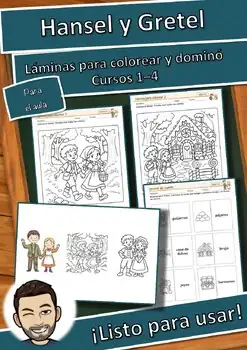
Taller de cuentos: Hansel y Gretel – Ficha de lectura: texto con huecos, comprensión auditiva y sopa de letras
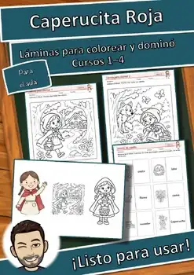
Taller de cuentos: Caperucita Roja – Ficha de lectura: texto con huecos, comprensión auditiva y sopa de letras
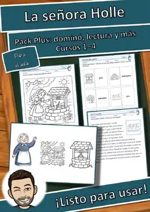
Taller de cuentos: Señora Holle Pack Plus – Ficha de lectura: texto con huecos, comprensión auditiva y sopa de letras
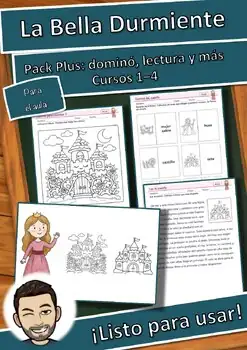
Taller de cuentos: La Bella Durmiente Pack Plus – Ficha de lectura: texto con huecos, comprensión auditiva y sopa de letras
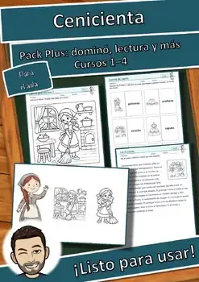
Taller de cuentos: Cenicienta Pack Plus – Ficha de lectura: texto con huecos, comprensión auditiva y sopa de letras
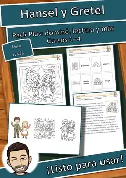
Taller de cuentos: Hansel y Gretel Pack Plus – Ficha de lectura: texto con huecos, comprensión auditiva y sopa de letras
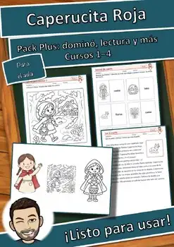
Taller de cuentos: Caperucita Roja Pack Plus – Ficha de lectura: texto con huecos, comprensión auditiva y sopa de letras
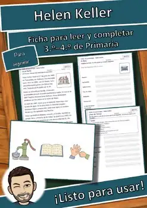
Taller de personajes: Helen Keller – Ficha de lectura: texto con huecos, comprensión auditiva y sopa de letras
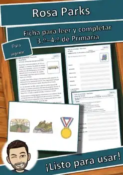
Taller de personajes: Rosa Parks – Ficha de lectura: texto con huecos, comprensión auditiva y sopa de letras
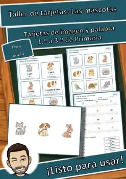
Taller de tarjetas: Las mascotas – Ficha de lectura: texto con huecos, comprensión auditiva y sopa de letras
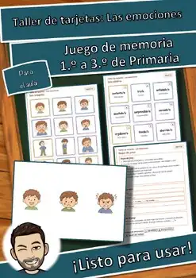
Taller de tarjetas: Las emociones – Ficha de lectura: texto con huecos, comprensión auditiva y sopa de letras
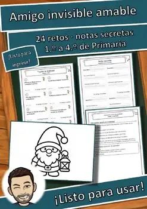
Amigo invisible de la amabilidad: 24 retos y notas secretas (1.º-4.º) GRATIS – Ficha de lectura: texto con huecos, comprensión auditiva y sopa de letras
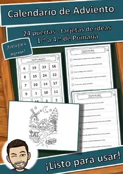
Calendario de Adviento del aula: 24 puertas, ideas (1.º-4.º) GRATIS – Ficha de lectura: texto con huecos, comprensión auditiva y sopa de letras
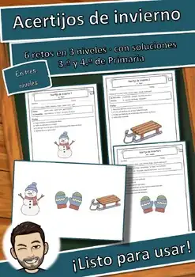
Acertijos lógicos de invierno: 6 retos, 3 niveles (3.º-4.º) GRATIS – Ficha de lectura: texto con huecos, comprensión auditiva y sopa de letras

Streik – Ficha de lectura: texto con huecos, comprensión auditiva y sopa de letras

Circo – Ficha de lectura: texto con huecos, comprensión auditiva y sopa de letras

Tejido – Ficha de lectura: texto con huecos, comprensión auditiva y sopa de letras
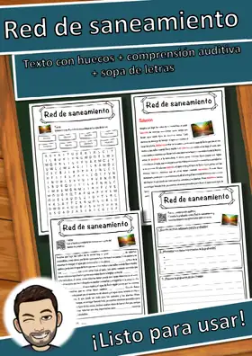
Red de saneamiento - Ficha - texto con huecos, comprensión auditiva y sopa de letras
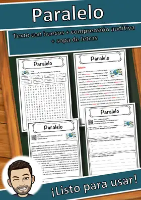
Paralelo - Ficha - texto con huecos, comprensión auditiva y sopa de letras
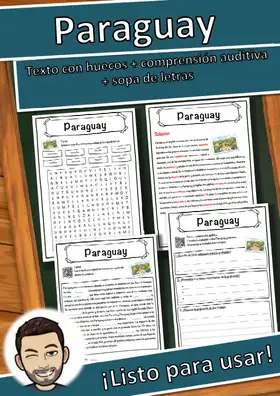
Paraguay - Ficha - texto con huecos, comprensión auditiva y sopa de letras
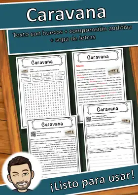
Caravana - Ficha - texto con huecos, comprensión auditiva y sopa de letras
No se encontraron recursos. Prueba con otra palabra o con otro filtro.